THE CHALLENGE
Designing the exterior of a conceptual urban air mobility vehicle, optimized for medical emergencies, rescues, and public acceptance.

Designing the exterior of a conceptual urban air mobility vehicle, optimized for medical emergencies, rescues, and public acceptance.
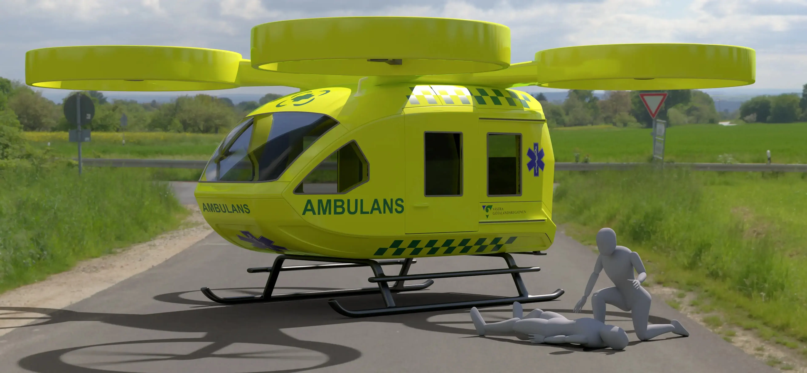
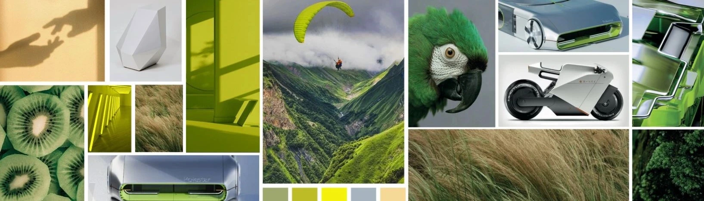
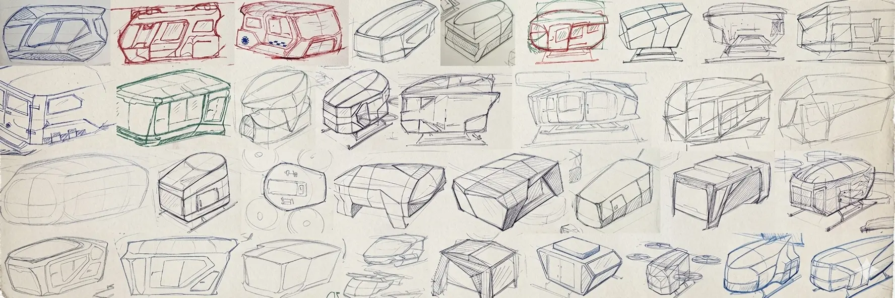
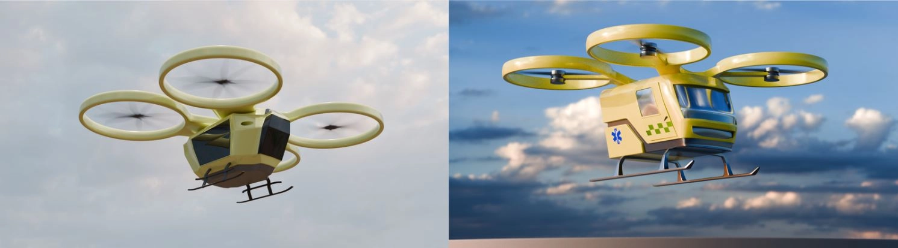
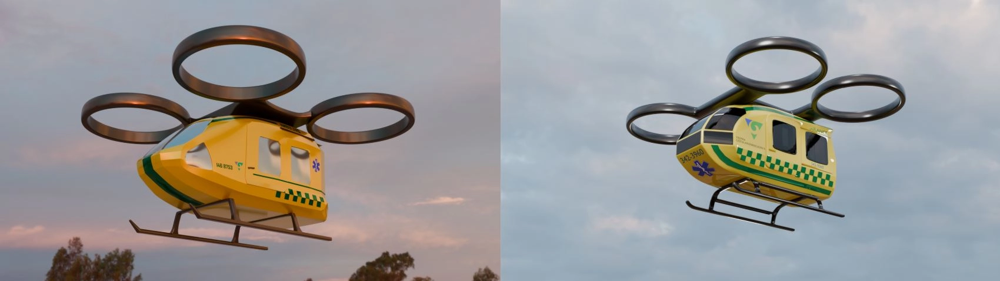
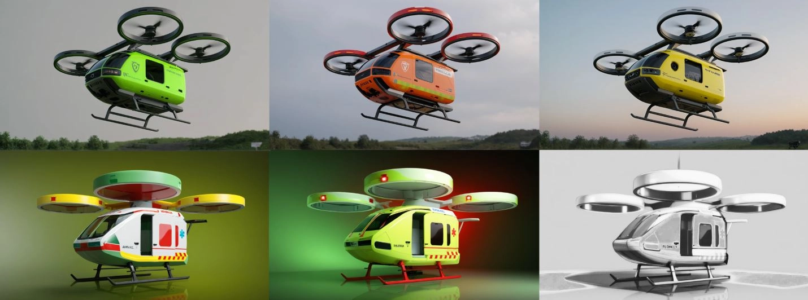
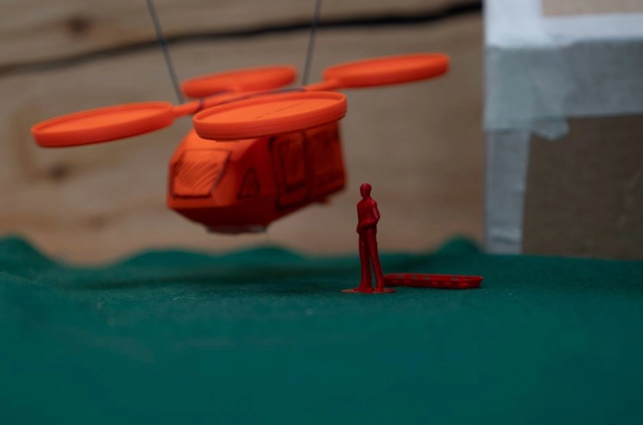
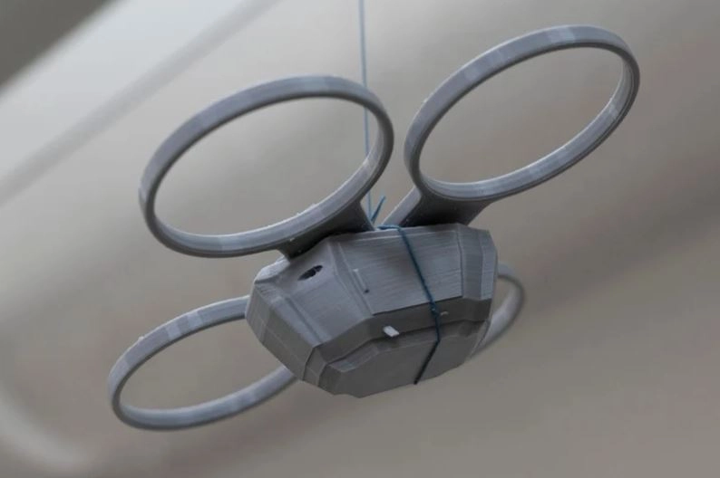
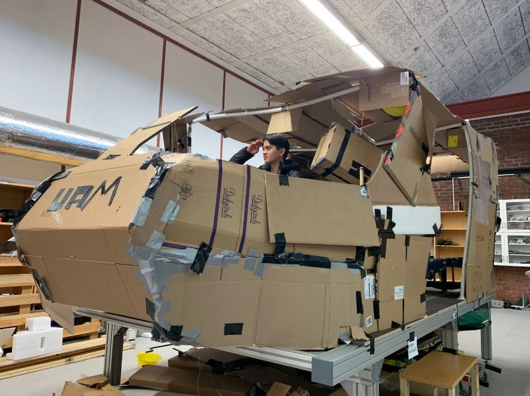
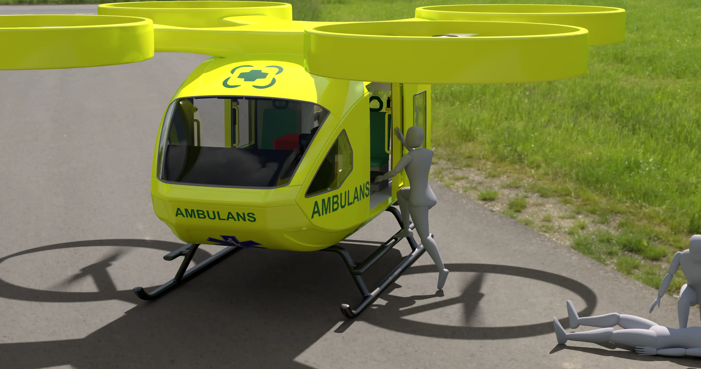
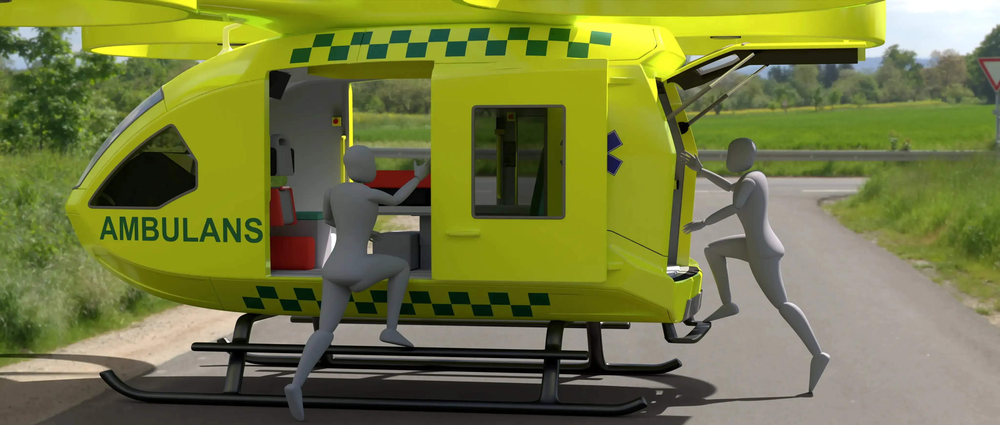
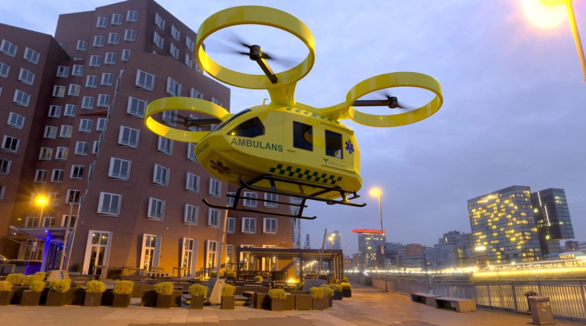
As with most projects, time proved to be a limiting factor. The project's
direction
and objectives evolved as it progressed, which added complexity. What began as
a vision to design a vehicle that could realistically be built within two years, requiring
careful consideration of feasibility and buildability constraints, gradually shifted toward a
more
conceptual approach. This transition allowed for greater freedom in form, materials, and design
expression, but it also created moments where the project felt less focused and more
exploratory.
Moreover, the scope of the project was ambitious. Designing a vehicle from the ground up
involves
far more than defining its overall shape and dimensions. It requires detailed consideration of
countless components, doors, windows, footsteps, structural elements, and many other functional
and
technical aspects. Each of these elements demands time, iteration, and thoughtful integration
into
the overall design.
Given the breadth of the scope and the limited timeframe, the outcome achieved by two dedicated
and
passionate students is truly impressive. While this proposal remains a concept, it represents a
strong and well-considered foundation. As a starting point, it offers meaningful potential for
the
future development of Urban Air Mobility solutions in the field of emergency response and rescue
operations.